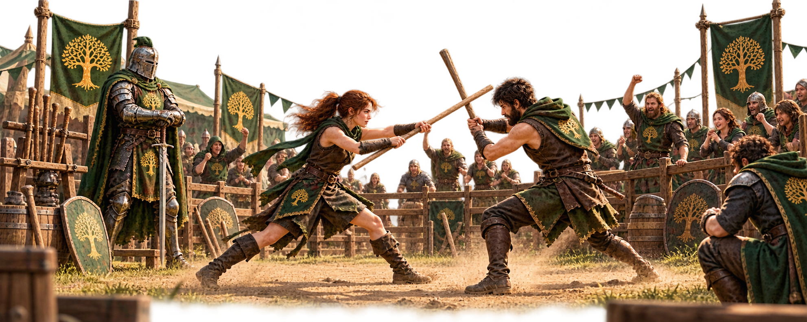

Sparring
Sparring with alliance members is a useful way to earn Honor, test your marches and learn how different lineups perform. The important part is that both players know what they want to achieve before the fighting starts.
Earning Honor
When we spar for Honor, the defending player will often place their strongest march in the garrison. The attacking player can then send their lower marches against it.
This gives your weaker marches useful fights while allowing you to earn Honor together with another alliance member.
Testing Your Marches
Sparring is also useful when you want to experiment with different Immortals, skills or march setups.
In that case, talk to your sparring partner first. You can ask them to use a lower-power garrison or a specific march so you can compare results under more useful conditions. The goal is not always to win. Sometimes the important part is finding out why one setup performs better than another.
Rank Advancement
Before a planned sparring session, check your Military Talent Tree for Rank Advancement.
When the talent is active, winning a battle as the attacker gives you double Honor. Up to three activations can be stored, so using them during planned sparring can make your Honor farming much more efficient.
Spar With a Purpose
Sparring is cooperation, not competition. Agree with your partner on what you are trying to achieve and adjust the defending garrison and attacking marches accordingly.
Remember that sparring still involves real battles. Pay attention to troop casualties and Prosperity before turning a friendly training session into an expensive one.
Sometimes the goal is Honor. Sometimes the goal is testing. Sometimes the most useful result is simply finding out why a march lost.